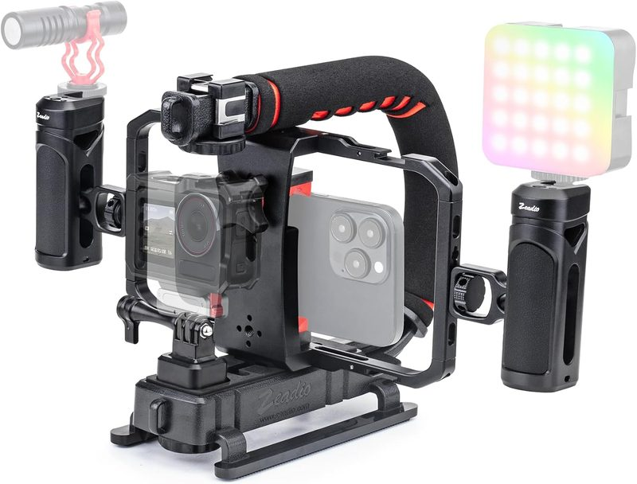

5 Best iPhone Video Cages for Mobile Filmmaking (2026)
Neewer Universal Phone Cage Video Rig
For mobile filmmakers who want dual handgrips and a Bluetooth shutter without spending a lot, the Neewer Universal Phone Cage Video Rig stands out in this roundup. It adjusts to fit most modern phones, includes a wireless shutter trigger, and holds a 4.6-star rating across hundreds of Amazon reviews.
Check Price on AmazonTop Phone Video Cages Compared
| Rig Model | Mount Type | Best Feature | Action |
|---|---|---|---|
| Neewer Universal Phone Cage | Adjustable Clamp | Bluetooth Shutter Trigger | View Deal |
| Zeadio Aluminum Video Cage Rig | Adjustable Clamp | Triple Cold-Shoe Mounts | View Deal |
| Zeadio T-Grip Video Rig | Adjustable Clamp | T-Shaped Handheld Grip | View Deal |
| Ulanzi Universal Phone Video Rig Kit | Adjustable Clamp | Dual Handles + Cold Shoe | View Deal |
| SmallRig Quick Release Phone Cage Kit | Quick-Release Clamp + MagSafe | Wireless Control Handles | View Deal |
Neewer Universal Phone Cage Deep-Dive
Mobile video capture in 4K ProRes demands steady framing and quick accessory switching. The Neewer cage's adjustable clamp fits a wide range of phone sizes, and reviewers consistently point to the two ergonomic side handles as a meaningful improvement for handheld walking shots over holding a bare phone. A cold-shoe mount on top lets you add a light or microphone without needing a separate rig.
👍 Pros
- ✅ Includes a Bluetooth shutter trigger
- ✅ Comfortable contoured side grips
- ✅ Cold shoe mount for lights or mics
👎 Cons
- ❌ Screw clamp takes longer to attach than a magnetic mount
- ❌ Thick cases may need to be removed first
Zeadio Aluminum Video Cage Rig

The Zeadio Aluminum Video Cage Rig trades plastic for a full metal frame, which gives it more structural rigidity on paper when you've got a shotgun mic and an LED light both mounted at once. Three cold-shoe points spread across the top and sides give you more flexibility for accessory placement than a single center mount, and the adjustable clamp handles most phone-plus-case combos without needing to strip the case off first.
👍 Pros
- ✅ All-metal construction is inherently more rigid than plastic-clamp designs
- ✅ Three cold-shoe mounts for lights, mics, and monitors
- ✅ Fits most phones with slim-to-medium cases on
👎 Cons
- ❌ Heavier than plastic-clamp alternatives
- ❌ No wireless shutter trigger included
Zeadio T-Grip Video Rig

Instead of dual side handles, the T-Grip uses a single bottom handle in a T shape, closer to how you'd hold a traditional camcorder. That single-hand-friendly layout makes it a good pick if you're regularly operating gear with your other hand, like a gimbal or a slate. It's the simplest, most affordable rig on this list, so accessory mounting is more limited than the cage-style options above.
👍 Pros
- ✅ Camcorder-style single-hand grip
- ✅ Most affordable option in this roundup
- ✅ Lightweight for long handheld sessions
👎 Cons
- ❌ Only one cold-shoe mount
- ❌ Less stable than dual-handle rigs for run-and-gun shooting
Ulanzi Universal Phone Video Rig Kit

Ulanzi's kit leans into "everything included" value: dual handles, a cold shoe on each side, and typically a small tripod or clamp bundled in depending on the kit variant. It's a solid starting point if you don't already own a light or mic and want one purchase that covers stabilization and mounting at once, though the individual components tend to feel less premium than buying a dedicated cage plus separate accessories.
👍 Pros
- ✅ Good value if you need multiple accessories at once
- ✅ Dual handles plus dual cold-shoe mounts
- ✅ Beginner-friendly setup
👎 Cons
- ❌ Build materials feel less premium than aluminum cages
- ❌ Bundled accessories are entry-level quality
SmallRig Quick Release Phone Cage Kit

SmallRig is a familiar name from full-size camera cages, and this kit brings that same quick-release philosophy to phones: a MagSafe-compatible quick-release plate lets you pop your phone in and out of the cage in seconds, which matters if you're switching between handheld and tripod shots often. It's priced closer to the premium end of this list, but the build quality and included wireless control handles reflect that.
👍 Pros
- ✅ Fast quick-release MagSafe plate
- ✅ Includes wireless control handles
- ✅ Trusted build quality from an established cage brand
👎 Cons
- ❌ Highest price on this list
- ❌ MagSafe puck adds bulk if you don't need quick-release